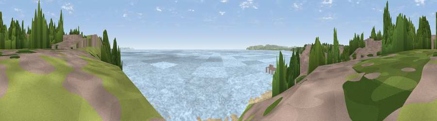

Viewpoint near Bournemouth
#25203 in England · top 37% of its area beats it · near BournemouthThe view, rendered

A 360° render of this exact spot computed from the terrain model, tree cover and land cover — summer colours, afternoon light, calibrated against photographs of famous viewpoints. Real trees, hedges and buildings will differ in detail.
The panorama
Grey silhouette: terrain skyline in each direction (720 bearings, Earth curvature and refraction included). Dashed green: skyline with trees (+15 m) and buildings (+8 m) as obstacles. Blue strip: how far the ground is visible on each bearing.
Where the view opens
Wedge length = distance to the farthest visible ground on that bearing (vegetation-aware). Rings at 10, 25 and 50 km.
What fills the view
72% water · 16% bare ground · 5% grassland · 4% woodland · 2% built-up
Angular shares of the visible panorama (visual magnitude), not map area. Landscape diversity 0.39 (0–1 Shannon).
Key numbers
More beautiful places nearby
The staircase of upgrades: each row has a higher view potential than everything closer. Driving times are estimates from straight-line distance, calibrated against real road routing — check an actual route before setting out.
| Place | Direction | Drive | Score |
|---|---|---|---|
| Viewpoint near Bournemouth | ENE · 0 km | ~1 min | 54.2 |
| Viewpoint near Poole | WNW · 6 km | ~14 min | 55.7 |
| Warren Hill | E · 8 km | ~16 min | 60.1 |
| Viewpoint near Studland | SSW · 10 km | ~19 min | 62.6 |
| Viewpoint near Studland | SSW · 11 km | ~20 min | 80.9 |
| Viewpoint near Studland | SSW · 11 km | ~21 min | 82.2 |
| Ballard Down | SW · 12 km | ~22 min | 83.2 |
| Viewpoint near Harman's Cross | SW · 13 km | ~24 min | 84.1 |
50.71752, -1.86959 · source: osm viewpoint · position refined by local search. Computed location — check access rights before visiting.